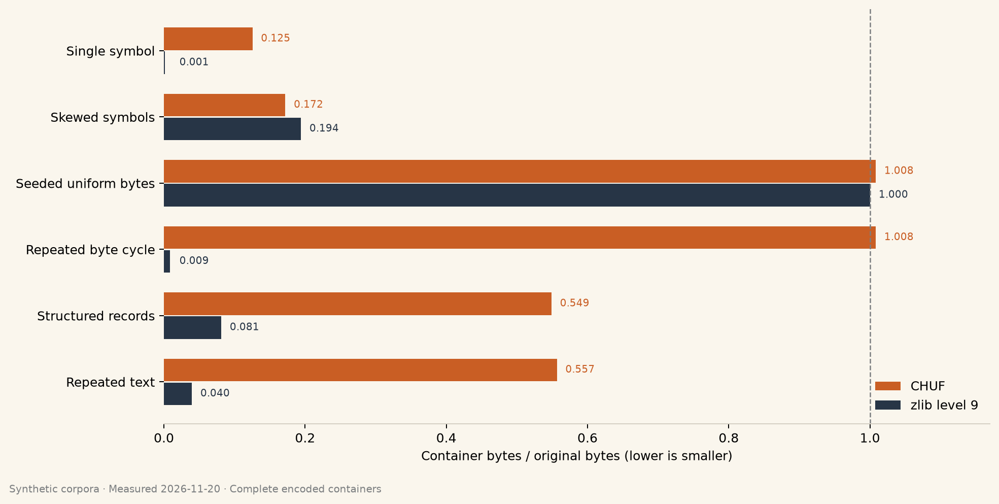
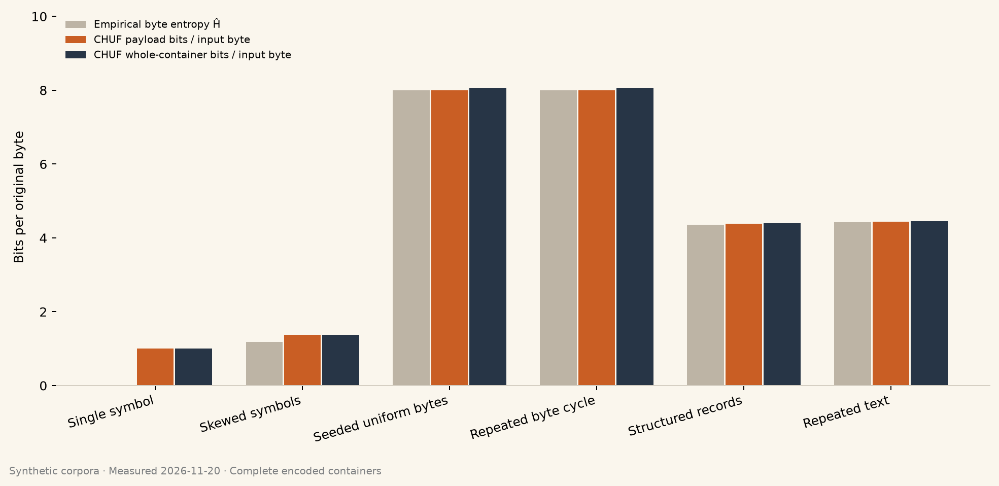
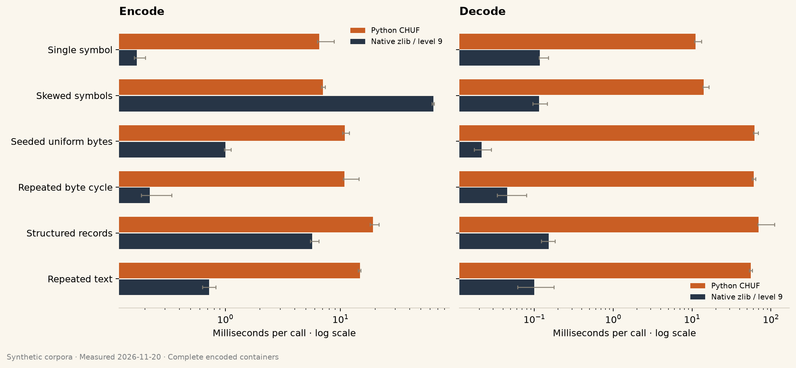

Canonical Huffman lab
Canonical Huffman codec
A source-built canonical Huffman codec, a strict binary decoder, and a reproducible comparison with zlib on eight synthetic corpora.
8committed corpora
224timed calls
28 Bfixed header
256possible byte symbols
| CORPUS | INPUT BYTES | CHUF BYTES | ZLIB BYTES |
|---|
| small.txt | 26 | 71 | 34 |
| single_symbol.bin | 65,536 | 8,222 | 85 |
| skewed_symbols.bin | 65,536 | 11,274 | 12,723 |
| uniform_seeded.bin | 65,536 | 66,076 | 65,562 |
| byte_cycle.bin | 65,536 | 66,076 | 585 |
| structured_records.jsonl | 128,272 | 70,417 | 10,428 |
| repeated_text.txt | 101,500 | 56,501 | 4,026 |
Sizes include the entire encoded container. Empty input is represented by 28 CHUF bytes or 8 zlib bytes; its compression ratio is undefined.
01 / Size comparison
Complete container sizes
CHUF models individual byte frequencies. zlib can also exploit repeated sequences. The repeated byte cycle has a uniform histogram but compresses strongly with zlib.

The dashed line marks no size change. Small inputs are listed separately in the overview because header overhead dominates them.
02 / Bit accounting
Empirical byte entropy
Ĥ is computed from the observed byte histogram. nĤ is a reference lower bound for a symbol-by-symbol prefix model using those empirical weights. It excludes the table, framing, padding and sequence structure.

This is not a promise that an arbitrary finite file can be stored in nĤ bits, and not a lower bound on compressors that model sequences. A one-symbol CHUF stream uses one bit per symbol by format policy, even though its histogram entropy is zero.
04 / Runtime
Measured runtime
Median in-memory call time across seven warmed repetitions. Whiskers show the observed minimum and maximum. Operation order is shuffled with a fixed seed each repetition.

This compares Python CHUF with native zlib at level 9. Language, algorithm and validation costs all differ. It is not an algorithm-only benchmark, and the seven measurements are not confidence intervals.
05 / Reproduce
Decoder validation
Correctness checks
12 tests, including an independent ABBA wire fixture, an independently built 255-bit maximum-depth tree, and exhaustive prefix-length optimality checks for seven small frequency distributions. Empty and one-symbol streams. All 256 byte values. Seeded roundtrip properties. Complete-prefix validation. Malformed tables, truncated payloads, padding errors, CRC mismatch and output limits.
Inspect the tests · Read the codec
python -m pip install -e .
python -m unittest discover -s tests -v
python scripts/run_study.py --out outputs/my-run
New experiments refuse to overwrite an existing run. CI generates separate inputs and verifies the published artifacts independently.